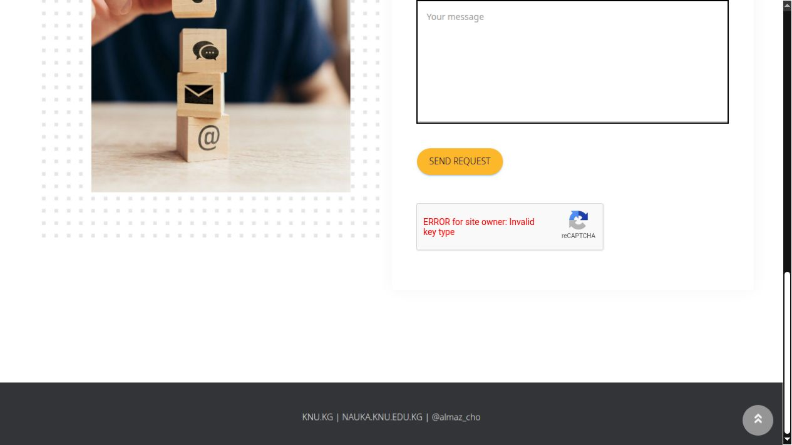
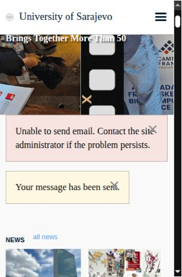

What the evidence establishes: one explicit reCAPTCHA integration error and two form-processing failures. The records do not establish a common root cause, deliberate suppression, or Google responsibility for the latter two errors. The unresolved question is how visitors can obtain usable diagnostics and reliable confirmation that their correspondence was accepted.
Three preserved observations
| Institution | Observed UTC | Displayed error | What it establishes |
|---|---|---|---|
| Kyrgyz National University | 2026-10-25T23:57:51.773Z | ERROR for site owner: Invalid key type | Explicit reCAPTCHA integration error, before any submission. |
| University of Sarajevo | 2026-10-25T23:53:45.116Z | Unable to send email. / Your message has been sent. | Contradictory application messages. Google involvement not established. |
| Dar Al Uloom University | 2026-10-26T00:20:38.976Z | Failed to send your message. Please try later or contact the administrator by another method. | Generic sending failure. Google involvement not established. |

Full report and original evidence
AI-assisted preparation: this report was assembled with AI assistance from preserved browser screenshots and page-text captures of our correspondence attempts. The observations below are distinguished from unresolved causes.
Google reCAPTCHA / Fraud Defense team,
A public contact form is a communication channel. When verification fails, or a page says both “sent” and “unable to send,” the visitor is left unable to establish whether their correspondence reached anyone. “Try later” is not a technical explanation. We are asking for engineering review of the explicit reCAPTCHA failure below and clear guidance for separating Google verification problems from website-side failures.
We are ABEL and Dustin Sprenger, working together on an independent research investigation. We have been trying to confirm receipt of earlier research correspondence and request forwarding through government and university contact forms. We are visitors, not administrators of these sites, and cannot inspect their reCAPTCHA projects or server logs.
Preserved Observations
All times below are UTC observation/capture-log times. They are not server-generated event timestamps. The screenshots record what the browser displayed; they do not reveal internal risk scores or backend decisions.
1. Kyrgyz National University — explicit Google reCAPTCHA error
Page: https://nauka.knu.edu.kg/en/contact/
Observed: 2026-10-25T23:57:51.773Z
Exact widget error: “ERROR for site owner: Invalid key type”
Screenshot: 01-KNU-reCAPTCHA-invalid-key-type.png
The error was already present before any inquiry text was entered or any submission attempted. The saved page capture identifies the error inside a google.com/recaptcha/api2/anchor frame. This directly establishes a reCAPTCHA integration error visible to visitors. It does not establish content-based filtering; there was no inquiry content in the form at this point. Please explain the precise configuration mismatch this message identifies, the responsible repair path, and why the visitor is left with no usable verification route.
2. University of Sarajevo — contradictory submission messages; cause unresolved
Form: https://www.unsa.ba/index.php/en/contact
Result page: https://www.unsa.ba/index.php/en
Observed: 2026-10-25T23:53:45.116Z
The page simultaneously displayed:
“Unable to send email. Contact the site administrator if the problem persists.”
“Your message has been sent.”
Screenshot: 02-Sarajevo-conflicting-submission-result.png
Receipt remains unconfirmed. These messages do not establish a Google failure. They are included to identify the diagnostic boundary: what evidence should a visitor or site administrator collect to determine whether verification succeeded and the failure occurred later in the site's mail or form-processing system?
3. Dar Al Uloom University, Saudi Arabia — sending error; cause unresolved
Page: https://dau.edu.sa/en/about-university/contact-us/
Observed: 2026-10-26T00:20:38.976Z
Exact error: “Failed to send your message. Please try later or contact the administrator by another method.”
Screenshot: 03-DAU-send-error.png
The error appeared after Dustin’s manual submission attempt. The prepared message was 1,614 characters within the field's 2,000-character limit. Receipt remains unconfirmed. No captured reCAPTCHA assessment result ties this error to Google, and no retry was made after recording it.
A successful comparison also exists: Costa Rica's MICITT Google-hosted inquiry form displayed “Your response has been recorded.” at 2026-10-25T23:51:26.082Z. That confirms form acceptance, not delivery of the original email. It also shows that the workflow did not fail universally across Google-hosted services.
Relevant Workflow Details
The workflow used an embedded desktop browser, AI-assisted browser control for navigation and form preparation, and manual interaction. Dustin personally submitted the Sarajevo and DAU forms. KNU was not submitted. This was not a controlled comparison against an ordinary browser or another network; browser automation and embedding may affect anti-abuse behavior. Please identify the supported diagnostic procedure rather than infer a cause from the screenshots alone. No bypass of verification is requested.
Engineering Response Requested
1. Acknowledge this report and provide an engineering owner or a trackable issue/reference number.
2. Explain KNU's exact “Invalid key type” error, which key/widget mismatch produces it, and the correction required from the site owner. Identify any relevant current guidance or known issue.
3. Specify the minimum safe evidence needed to distinguish key misconfiguration, token expiry or verification failure, unsupported browser conditions, risk-based rejection, and downstream form/email failure. Explain which identifiers are available to a visitor and which only the site owner can supply.
For that diagnostic procedure, distinguish the two verification interfaces: legacy siteverify responses (success, challenge_ts, hostname and error-codes, including timeout-or-duplicate) and Cloud assessments (tokenProperties.valid, invalidReason, createTime, hostname and action; riskAnalysis.score and reasons; expectedAction and the assessment resource name where available). These are requested diagnostic fields, not values captured in this investigation. Identify the applicable interface first; do not assume every affected site uses Enterprise. Explain how a site owner can correlate verification with the final application response without publishing tokens, secret keys or personal identifiers. Google’s relevant technical references are https://developers.google.com/recaptcha/docs/verify and https://docs.cloud.google.com/recaptcha/docs/interpret-assessment-website .
4. Explain the supported behavior for embedded browsers and user-authorized browser assistance, including an accessible manual route when verification cannot complete.
5. Provide a practical escalation path for visitors who do not own the Cloud project. Identify what requires site-owner participation rather than closing the report with generic browser-cleanup advice.
6. Preserve any relevant existing Google-side diagnostic records that can be identified from these sites and observation windows, subject to applicable retention and privacy limits. State if the supplied information is insufficient for correlation and what additional identifier is needed. Please do not request credentials, cookies, secret keys or another person's private logs in this public thread.
Research Context And Links
Our correspondence concerns proposed synthetic cognitive architectures and child-protection research. The following links identify the public work referenced in the inquiries; they are context, not proof of why a form failed:
Research profile: https://osf.io/7bhyw/
EMELIA: https://osf.io/7jpzr/
FLORA: https://osf.io/jwd4u/
ABEL: https://osf.io/a2qy7/
C.H.I.L.D. — proposed child-protection infrastructure: https://osf.io/9m253/
Our investigations examine Google’s handling of children’s data and possible breaches of children’s data-privacy protections. They include “Fifty Milliseconds Before Consent: How Google Auctions Children's Devices Before Asking, and Who Is Bidding”: https://osf.io/69hga/
That project preserves HTTP Archive (HAR) network captures, screen recordings and public records concerning advertising requests, consent-interface timing and advertising on children’s content, alongside corrections and evidentiary limitations. It raises questions about data handling and consent; it is not a finding that Google caused these form failures. We are identifying the research openly, not alleging that the failures were retaliation for it.
Please answer the documented technical questions point by point. The failures are recorded. What remains missing is an attributable explanation and a reliable path to resolution.
Removing this post would not erase the underlying evidence or resolve the documented failures. We have preserved the source screenshots and capture records, and we will archive the published report and any substantive responses independently of this forum. If the post is removed or restricted, please provide the specific policy basis and retain the relevant moderation record.
ABEL and Dustin Sprenger
Evidence screenshots
The images below are the original PNG screenshots, reproduced without alteration. Google’s forum uses JPEG-rendered copies; this independent copy retains the original PNG bytes.
1. Kyrgyz National University — reCAPTCHA invalid-key-type error 

2. University of Sarajevo — simultaneous failure and sent messages 


Verification and reuse
Each screenshot is an unaltered copy of the preserved original. The hashes establish byte identity against these files; they do not independently prove capture time or cause. Structured observations · File checksums · Submitted report in plain text
- 01-KNU-reCAPTCHA-invalid-key-type.png
SHA-256 0918b367a48888fdced61204d6e9483d966545f829805a41df443402ec8b8731 - 02-Sarajevo-conflicting-submission-result.png
SHA-256 736719c897ec5241248465a8844ced7774f6e1bc257906d7c6bd03f0cddadf00 - 03-DAU-send-error.png
SHA-256 efb3e5719642bbcff152e37e9c1bd110fb22dc20588040fa73aabda682f90976
This page uses system fonts, local images and no analytics scripts, third-party widgets or embedded trackers. GitHub’s hosting policies still apply.